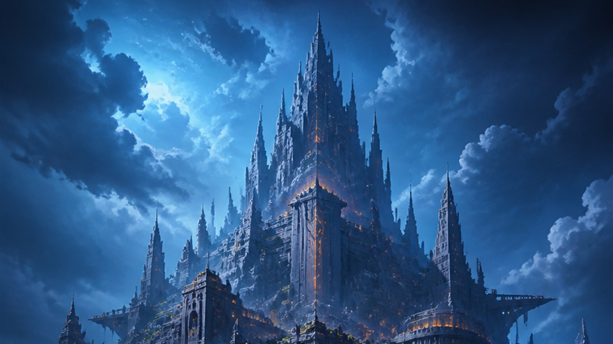

OLD MAN OTAKU / ANIME NEWS • AUGUST 11, 2026
Mushoku Tensei Season 3 Enters the Chaos Breaker Arc on August 16
Mushoku Tensei: Jobless Reincarnation is opening the door to its next major Season 3 chapter. Episode 8 begins the Chaos Breaker Arc on August 16 with a floating fortress, three major cast additions and a much wider view of Rudeus Greyrat's world.

The next door in Mushoku Tensei does not open onto another classroom, quiet street or familiar home.
It opens into the sky.
A new trailer released August 10 previews the Chaos Breaker Arc, which officially begins with Season 3, Episode 8 on August 16, 2026. The episode is titled “The Floating Fortress,” and the footage signals a sharp change in scale after a stretch centered on Rudeus' family, relationships and Nanahoshi's research.
That shift is the real promise of the announcement. Season 3 has already moved Rudeus and the surrounding cast into a different stage of their lives. Now the story is preparing to pull its camera backward and remind viewers how much history, power and danger exists beyond the routines Rudeus has built.
The name at the center of that transition is Chaos Breaker.
What was announced?
The August 10 promotional video is the first dedicated preview for the Chaos Breaker Arc. The official Japanese anime site confirms that the storyline begins with Episode 8 on Sunday, August 16. It also identifies the episode as “Kūchū Jōsai,” or “The Floating Fortress.”
The trailer follows the outcome of Episode 7, in which Rudeus assists Nanahoshi with her object-summoning research. In return, she offers to introduce him to Perugius Dola, one of the legendary heroes associated with sealing the Demon God Laplace four centuries earlier. Nanahoshi believes Perugius may know something that can help Rudeus understand his mother Zenith's condition.
That invitation sends Rudeus toward Perugius' airborne stronghold: Chaos Breaker.
The announcement also expands the Japanese voice cast around the new chapter. Rikiya Koyama voices Perugius Dola, Ayumi Tsunematsu voices Sylvaril of the Void, and Nanako Mori voices the immortal demon king Atoferatofe “Atofe” Rybak. Arumanfi the Bright, voiced by Kengo Kawanishi, also returns after appearing earlier in the anime.
Season 3 premiered in July 2026, following the conclusion of Season 2 in 2024. Crunchyroll is streaming the current season internationally.
Those are the confirmed facts. Everything beyond them should be handled carefully, especially for viewers who have not read Rifujin na Magonote's completed light-novel series.
What is Chaos Breaker?
Anime-only viewers should be cautious about researching that question.
The safest answer is also the most immediately exciting one: Chaos Breaker is the enormous flying fortress associated with Perugius Dola. It is not simply a dramatic marketing subtitle created for Season 3. The name belongs to a place with real significance inside the world.
Perugius is an immensely important figure within the history and power structure of Mushoku Tensei. Explaining exactly how his position connects to later events would quickly move beyond the boundaries of a spoiler-conscious news report. The trailer and official synopsis provide enough context for now: he is a legendary hero, he commands extraordinary respect, and Rudeus has a personal reason to seek an audience with him.
That meeting widens the horizon. Season 3 has been bringing people, places and unresolved questions into Rudeus' orbit that reach far beyond his immediate household. Chaos Breaker gives those threads a new center of gravity.
The flying fortress changes the anime's visual scale
Mushoku Tensei has already traveled through cities, wilderness, magical academies and the dangerous expanse of the Demon Continent. A floating fortress gives Studio Bind another chance to emphasize one of the anime's defining strengths: making a fantasy world feel inhabited rather than merely illustrated around its characters.
The environments matter. Distance matters. Weather, architecture and regional texture matter. Even quieter episodes often use background motion and physical detail to make rooms and streets feel like places that continue existing outside the frame.
That grounded approach is one reason the supernatural imagery can land with such force. When the series presents something impossible, the audience already understands the ordinary world beneath it.
Chaos Breaker can push both ends of that formula. The fortress offers immediate spectacle, but the more important question is what Rudeus learns once he enters it. A massive setting is only scenery until the story fills it with history, relationships and consequences.
Season 3 is expanding the board
The season began with unfinished business involving Eris before returning its attention to Rudeus and the people around him. That structure matters.
Mushoku Tensei regularly allows characters to disappear from the immediate narrative while their lives continue elsewhere. When they return, they do not simply reset to the version audiences last saw. They have trained, failed, formed new loyalties and developed new priorities.
Rudeus has changed too. The young adventurer who once struggled to survive the Demon Continent now has a family, responsibilities, political connections and an increasingly complicated place within this world's hierarchy.
That changes the meaning of every powerful new figure he encounters. The question is no longer only, “Can Rudeus survive this person?” It can also become, “What does meeting this person change?”
The distinction grows more important as the story moves away from isolated adventures and toward a larger network of history, alliances and old power.
Three cast additions signal a broader phase
The cast announcement is not just a list of new voices. It tells the audience which parts of the world are moving closer to the center of the anime.
Koyama's Perugius carries the weight of a figure whose reputation reaches back centuries. Tsunematsu's Sylvaril is one of the twelve familiars who serve him. Mori's Atofe is introduced with a title that immediately communicates a different kind of danger: immortal demon king.
For anime-only viewers, that is enough information. The light novels are complete, and even a seemingly harmless search for one of those names can surface character histories, future relationships and plot outcomes far beyond Episode 8.
This is a particularly good moment to let the anime control the reveal. Names that are unfamiliar today may carry considerably more weight later, and part of the pleasure is discovering that weight in the order the adaptation intends.
Studio Bind faces another large test
Mushoku Tensei remains closely associated with Studio Bind, the production company created with the series as its foundational work. That relationship has given the anime a visual identity unusually attentive to the texture of its world.
The show does not depend only on spectacular battles. Some of its strongest animation is almost invisible: a character changing posture during a conversation, people moving through a distant street, weather altering the emotional temperature of a scene, or architecture shifting as the cast crosses regions.
When the story does demand spectacle, that foundation gives it scale. The impossible feels enormous because the ordinary has been made believable.
Chaos Breaker is therefore more than a design challenge. Studio Bind must sell the fortress as a physical environment while preserving the quiet character observation that makes the series work. The audience needs to feel both the size of the place and the tension inside a room.
Do not expect a simple action arc
The trailer's scale could make Chaos Breaker look like the beginning of a straightforward action storyline. Mushoku Tensei rarely works that way.
The series often introduces an adventure hook and then turns it toward relationships, politics, history or consequences established many episodes earlier. Its biggest fantasy ideas are usually connected to deeply personal needs.
That connection is already visible here. Rudeus is not heading toward Perugius merely because a floating fortress looks impressive. The official setup links the visit to Zenith. The scale is mythic, but the motivation is intimate.
Anime-only audiences should therefore expect world-building and character development to matter at least as much as spectacle. Season 3 has been positioning pieces. Chaos Breaker gives several of them somewhere to meet.
A bigger middle act for Season 3
The timing is notable. Beginning the new chapter with Episode 8 means the production is not saving this transition for a last-minute finale tease. Chaos Breaker becomes part of Season 3's developing middle act.
That gives the anime room to establish its new figures and setting. It also suggests that the consequences can extend beyond one visit or one week of television. The official trailer itself contrasts the comparatively peaceful family-centered atmosphere of the season's first half with tense imagery of the floating fortress and Demon Continent.
In other words, the announcement is selling more than Episode 8. It is drawing a line between the phase viewers have just watched and the larger phase now approaching.
The RogueVerse take
Mushoku Tensei is often strongest when its world suddenly reminds us how enormous it is.
Rudeus can spend episodes worrying about family, relationships and everyday problems, only for the story to pull the camera backward and reveal ancient powers, legendary figures and unfinished history operating far beyond his home.
Chaos Breaker is positioned to perform exactly that trick.
The new trailer is not merely selling another weekly episode. It announces that Season 3 is entering its next phase and that the world around Rudeus is getting larger again.
For anime-only viewers, knowing less may genuinely make the experience better. Avoid the wiki. Do not search every unfamiliar name. Let Studio Bind open the doors to Chaos Breaker itself.
Mushoku Tensei: Jobless Reincarnation Season 3's Chaos Breaker Arc begins August 16, 2026, with Episode 8.
Sources
Official anime site: Chaos Breaker Arc trailer and Episode 8 setup · Official anime site: new character and cast information · Crunchyroll News: trailer and three cast additions · Crunchyroll Season 3 streaming guide
Announcement facts checked against the official Japanese anime site and Crunchyroll on August 11, 2026. Lore discussion is intentionally limited to information disclosed by the anime's official Episode 8 setup.